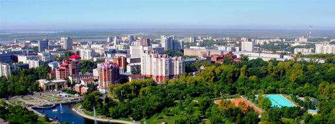

12 августа 2015
Сообщаем Вам, что по инициативе членов правления ТСЖ «Благо» в период с «23» сентября 2013 года по «15» октября 2013 года будет проводиться общее собрание членов ТСЖ «Благо» Калараша 11 и 13, в форме заочного голосования.
Общее собрание собственников помещений в форме заочного голосования осуществляется путем принятия собственниками персональных решений в письменной форме по вопросам, поставленным на голосование. Сообщаем Вам, что по инициативе членов правления ТСЖ «Благо» в период с «23» сентября 2013 года по «15» октября 2013 года будет проводиться общее собрание членов ТСЖ «Благо» Калараша 11 и 13, в форме заочного голосования.
Общее собрание собственников помещений в форме заочного голосования осуществляется путем принятия собственниками персональных решений в письменной форме по вопросам, поставленным на голосование.